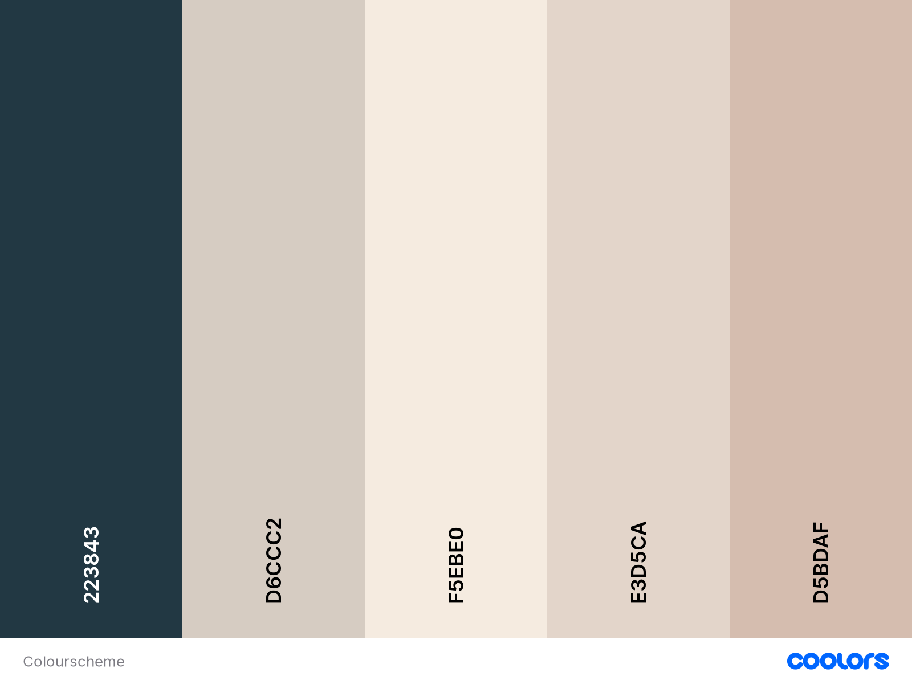

Style guide
I made my website according to this colour scheme because it is simple and follows the aesthetic of the Art Gallery I am trying to achieve and because I don’t want to use pure white I decided to go with a warmer scheme so it isn’t hard on the eyes and can make the website look more aesthetically pleasing.

I decided to use New times Roman as it is a classic font that is often associated with professionalism.
I went with the simple UI and UX because after looking at a few websites that were in line with the aesthetic that I wanted they all had a very simple and I thought using this sticky navigation was a good idea to showcase the simplicity and clean look I wanted.
To make the website more art gallery-like, I would like to add decorations such as boarders or underlines to the words that look like the boarders of a picture frame and have the captions to things that look like that of a label that goes under paintings in galleries.